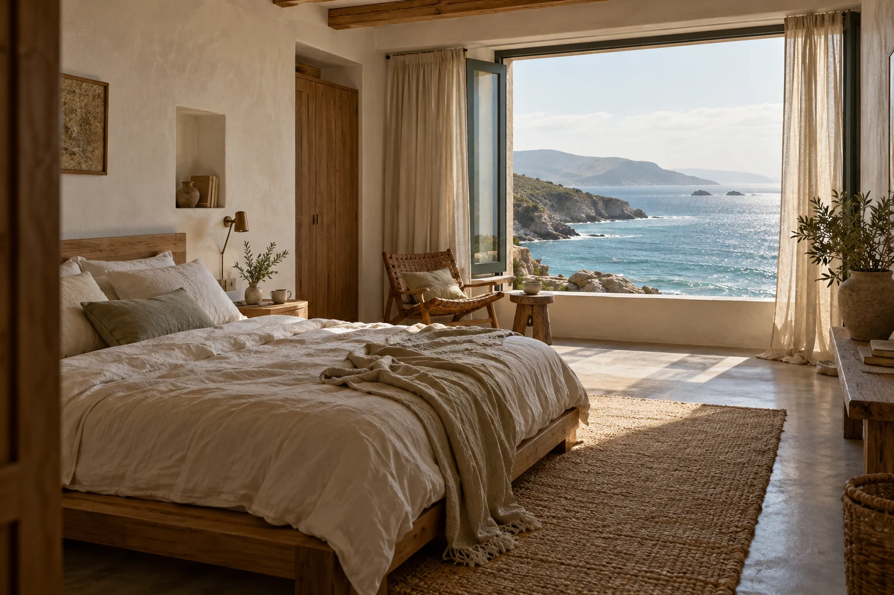

Rooms / 留一扇窗給海
先找到，
你想醒來的地方。
不把行程排滿。兩種房間，兩種看海的方式；
都留一個可以坐下來，什麼也不做的位置。
以上房型、設施與圖像均為虛構示例。沒有真實房價、庫存或旅宿服務。
Before you arrive
慢慢來，
也要心裡有底。
想像中的海岸很安靜，
旅行前的細節應該很清楚。
下列為原型情境條件，並非真實營運承諾。
抵達與離開的時間？
情境設定為 15:00 後抵達、11:00 前離開。若預計晚到，可在詢問備註說明；此原型不會安排接待。
有適合所有人的無障礙動線嗎？
本案例設定旅宿入口有階梯，未提供無障礙房型。若有行動或感官需求，真實旅程必須先向業者確認；示例不能保證適用。
想吃早餐，或帶寵物同行？
情境中包含簡單早餐、不開放寵物，也沒有加床。飲食需求可以記在備註；這裡不會建立餐點或入住安排。
可以在這裡訂房或確認取消條件嗎？
不能。泊光是虛構旅宿，這裡只能演練日期詢問。沒有付款、訂單、空房查詢或真實取消條款，也不會寄出資料。
Your next quiet day
把想來的日子，
先寫下來。
選好房間，再整理日期與同行人數。
下一步會先給你核對摘要。
本機詢問示例
沒有空房查詢，不會預約、收費或寄出資料。
重新整理頁面會清除填寫內容。
02 / 再看一眼
這樣的日子，適合你嗎？
這是一份本機摘要，不是訂單。沒有檢查空房，也沒有寄出任何資料。
03 / 先把心安頓好
示例走完了，
資料沒有寄出。
沒有建立預約或保留房間。你剛才選的房型與日期還在，可以回去修改。